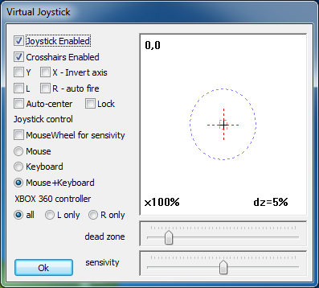

In this window you can configure the Virtual Joystick:

For the Virtual Joystick to be detected by the game you also need to turn ON the flag "Enable Virtual Joystick" in Input-> Joystick.
More recent games that use DirectInput for the joystick control can use this feature turning ON the flags "Hook dinput" or "Hook dinput8" in Input->DirectInput.
If you are using an Xbox controller you also need to enable the "Hook xinput" flag in the Input tab.
NOTE: In the joystick panel the black cross shows the joystick position (0,0), the blue circle and red dotted cross are scaled according to the sensitivity to provide an immediate visual feedback of that value. Use the slider to adjust the sensitivity (x100%).
|
Joystick Enabled |
Disables or enables the virtual joystick. DxWnd tries to guess the best conditions by disabling the joystick when the mouse cursor is visible, but you may have to switch the joystick on and off according to the specific situation. |
|
Crosshairs Enabled |
When enabled shows white cross-hairs in the game screen that tracks the virtual joystick movement. |
|
Invert Y Axis |
Inverts the Y axis. |
|
Invert X Axis |
Inverts the X axis. |
|
L - auto-fire |
Left button auto fire. |
|
R - auto-fire |
Right button auto fire. |
|
Auto-center |
Keeps moving more and more slowly the joystick position toward the 0,0 coordinates of the center so that, if the mouse is left unmoved, the joystick becomes progressively centered. |
|
Lock |
When checked, the mouse middle button becomes a toggle to enable or disable the virtual joystick. When disabled, the application still detects the presence of the joystick, but the axis coordinates are fixed at the central position and all buttons are in off state. |
Joystick control:
|
MouseWheel for sensitivity |
Adjust the mouse sensitivity with the wheel. |
|
Mouse |
Contol joystick with the mouse. |
|
Keyboard |
Contol joystick with the cursor keys. |
|
Mouse+Keyboard |
Control joystick with mouse and cursor keys. |
XBOX 360 controller:
|
all |
Assign mouse reading to both sticks. |
|
L only |
Assign mouse reading to left stick only. |
|
R only |
Assign mouse reading to right stick only. |